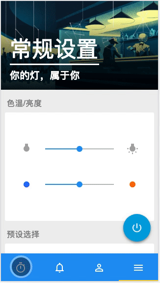
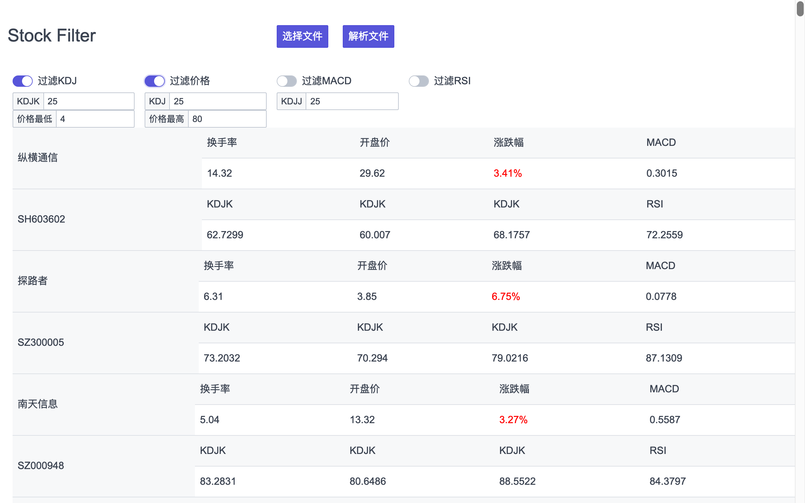
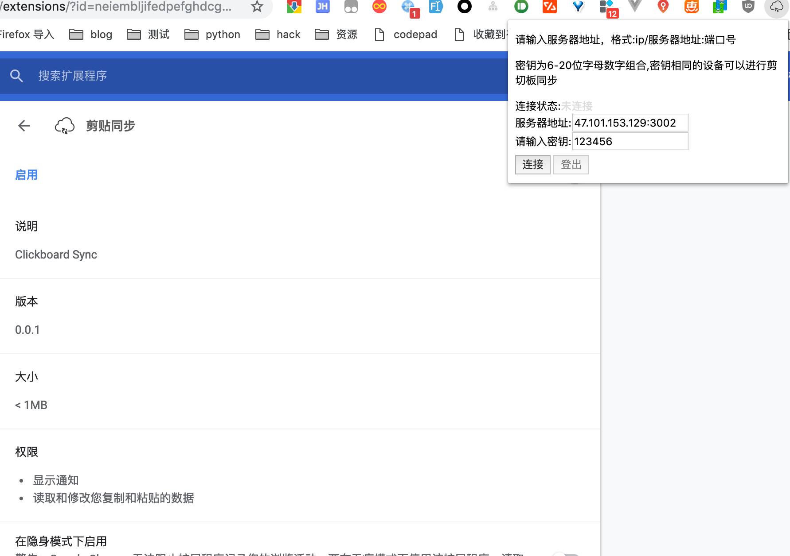

- Skill. 技能清单
熟悉常用的RestFul测试工具Postman，Fiddler等接口测试工具的使用。
熟悉Monkey Runner，Appium，Slenium，Puppeteer等自动化测试工具的脚本编写和使用。
熟悉Burpsuite，Whireshark等抓包工具的使用，
会使用WANem模拟弱网环境，熟练使用各种linux发行版。
了解常见TCP/IP协议，对团队进行过IPv6的培训获得团队一直好评。
能够用 HTML + CSS 编写语义化的代码，完成较复杂的布局。
在学习的过程中熟悉了 Vue， 也会尝试ES6、7 的新语法，了解 Node.js, jQuery。
熟悉 Git Gulp 等开发工具的使用
了解 Express, MongoDB, Mysql, Flask 能搭建简单的后端项目，有自己的服务器
- Experience. 项目经验
个人项目
测试相关-TerminalControlDEMO SourceCode
原公司产品web端过于臃肿，于是使用java编写了桌面版的客户端，结合常用接口，能快速完成测试工作。
软硬件结合-TREE SourceCode
该项目是一个智能家居类作品，从策划⾄最终实现只耗费20余天。以极⾼的完成度、良好的使⽤体验，优雅的硬、软件设计获 NEXTIDEA腾讯X英特尔智能硬件设计⼤赛 ，全国⼆等奖（⼆等奖共两名），其余获奖团队来⾃北⼤、复旦、涂鸦智能等院校或公司
前后端相关-stockAnalysis SourceCode
一个基于Node.js的爬虫，在每天股市结束后爬取A股所有股票状态，存储到文件和MongoDB中。
并且使用股票MACD和KDJ等几个指标分析股票分析出值得抄底的股票，并且发送邮件到指定邮箱，邮件附件中包含一个HTML Templete附件，附件中包含当日所有数据，可以自行打开HTML进行再次筛选。前后端相关-AssetManagementSystem SourceCode
一个用来练手Vue的比较完整的资金管理系统。
后端服务器和路由使用Node.js + Express, 使用全球公认头像管理库实现头像管理, 使用JWT实现Token管理, Passport-jwt实现Token请求验证。
使用Mongooes实现MongoDB的数据库连接，增删改查操作。
前端使用VueCli 3.0 + Element-UI进行开发构建, 使用Axios实现网络请求，实现增删改查以及筛选，分页等操作。其他-clipboardSync SourceCode
因为现在有几台电脑一同协作，主要的工作机设置了文件夹的共享，可以互相访问文件，但是Mac与Windows之间想要互相之间访问剪切板大多需要打开一个第三方软件，感觉不够优雅，所以花一天学习，自己写了一个共享剪切板的Chrome插件。
第三方的服务器感觉没有必要且不放心，所以自己利用Socket.io写了很简单的后端处理不同电脑之间的剪切板同步,可以个人或者小团队内部使用。
工作经历
苏州科达科技股份有限公司
苏州科达主业为视讯与安防产品及解决⽅方案提供，提供视频会议、视频监控以及其他视频应⽤用解 决⽅方案。
2017.2-2017.5(实习期)
• 负责软件视频会议终端 TrueLink以及科达天⾏行行的安卓，iOS，PC，安卓盒⼦子四端的测试维护⼯工作。2017.7-2018.11
• 负责参与五代高清终端（基于安卓）的本身以及相应的网页控制端，安卓APP控制端，PC控制端以及其他配套⼯具的测试⽤例的执⾏；
• 负责视频会议终端由三代高清（基于嵌⼊式Linux）到五代高清（基于安卓）的过渡期的测试与维护⼯作；
• 与开发和产品经理⼀起，参与项⽬测试计划的制定，把控项⽬进度与质量；
• 使⽤Python开发了整个硬终端项⽬组第⼀个接⼝测试框架，使⽤Python开发了硬终端项⽬组第⼀个测试⽤例⾃动执⾏框架。虽然是测试，我在测试的工作中也会接触到大量的代码，有时也能直接指出开发出错的代码逻辑，同时我也会思考怎样开发才能更好的实现需求。
团队的产品也教会了我认真做好每一个细节。在科达的人生第一次职场之旅，我觉得ok。
- Basic info. 基本信息
- 个人信息: 袁鹏飞
男 / 25岁 / 离职- 学校：南京邮电大学通达学院
- 专业：数字媒体技术
- 英语水平: CET-6
- Blog: https://firyuen.github.io (速度稍慢)
- Blog: https://firyuen.xyz:3000 (阿里云暂未备案，可能无法访问)
- GitHub: https://github.com/FirYuen
- Contact. 联系方式
- Email: yuenwork@163.com
- Wechat: tutuyuen
- PhoneNumber: 17621180949
- Application. 应聘岗位
- Web前端工程师
- Tech. 主要技能点
JavaScriptHTML/CSSLinuxPythonGitNode.js